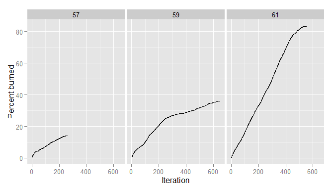

Define and run NetLogo experiments in R
library(devtools)
install_github("bergant/nlexperiment")
Define experiment with step measures:
experiment <- nl_experiment(
model_file = file.path(nl_netlogo_path(),
"models/Sample Models/Earth Science/Fire.nlogo"),
while_condition = "any? turtles",
param_values = list(density = c(57, 59, 61)),
random_seed = 1,
step_measures = measures(
percent_burned = "(burned-trees / initial-trees) * 100"
)
)Run the experiment:
result <- nl_run(experiment)Plot of burned forest as a function of time for different forest densities:
# get the observation data for step measures
dat <- nl_get_result(result, type = "step")
# plot the observations
library(ggplot2)
ggplot(dat, mapping = aes(x = step_id, y = percent_burned)) +
geom_step() +
facet_grid(. ~ density) +
labs(y = "Percent burned", x = "Iteration")